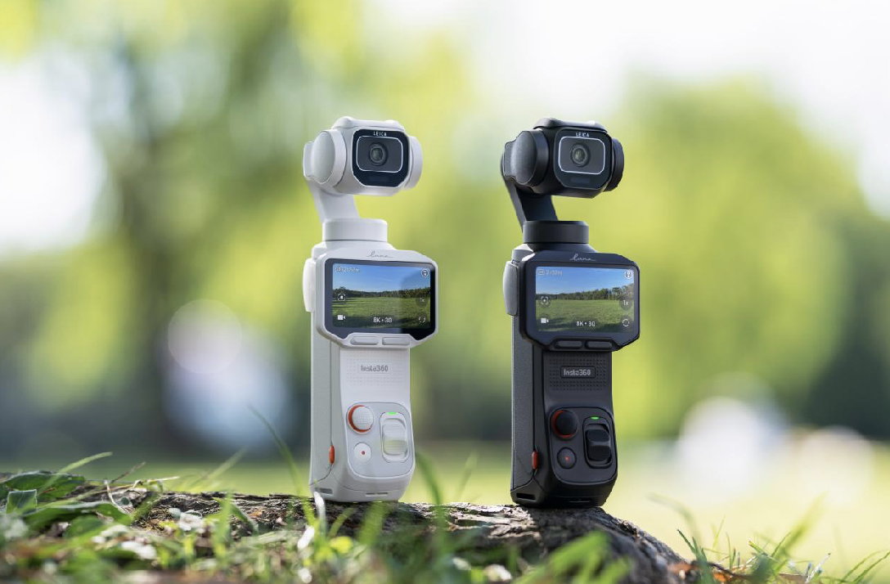
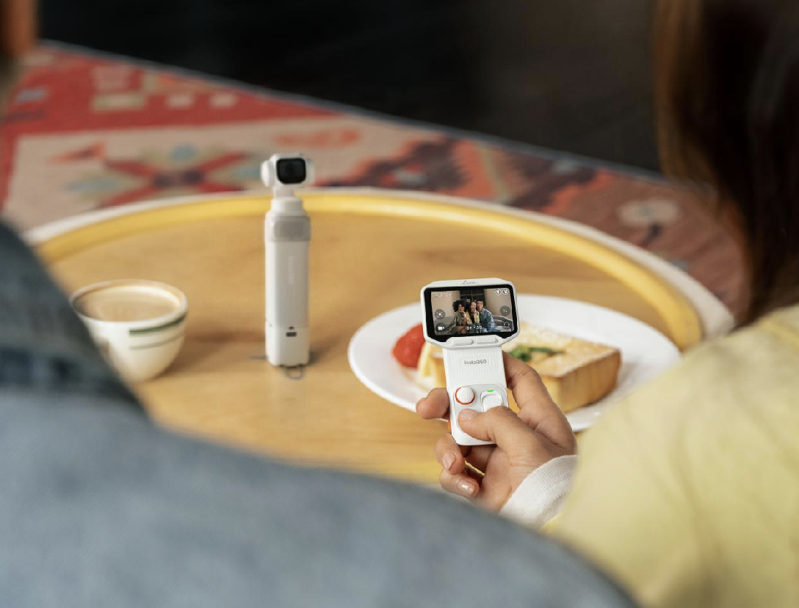
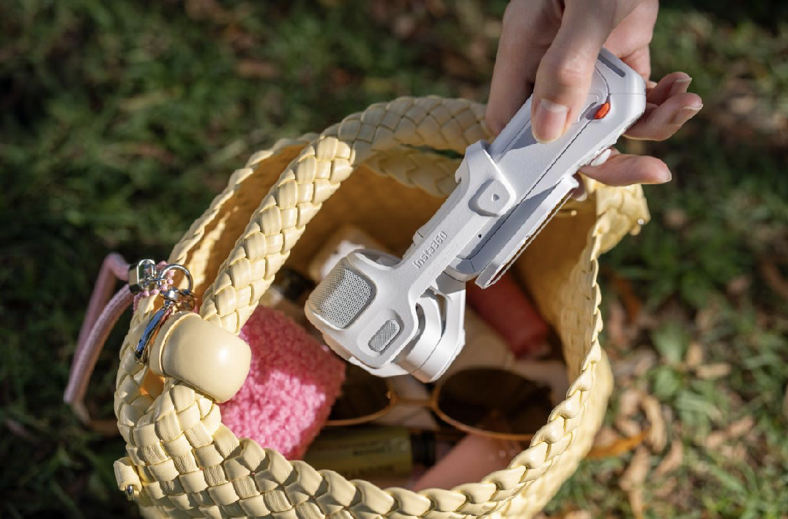
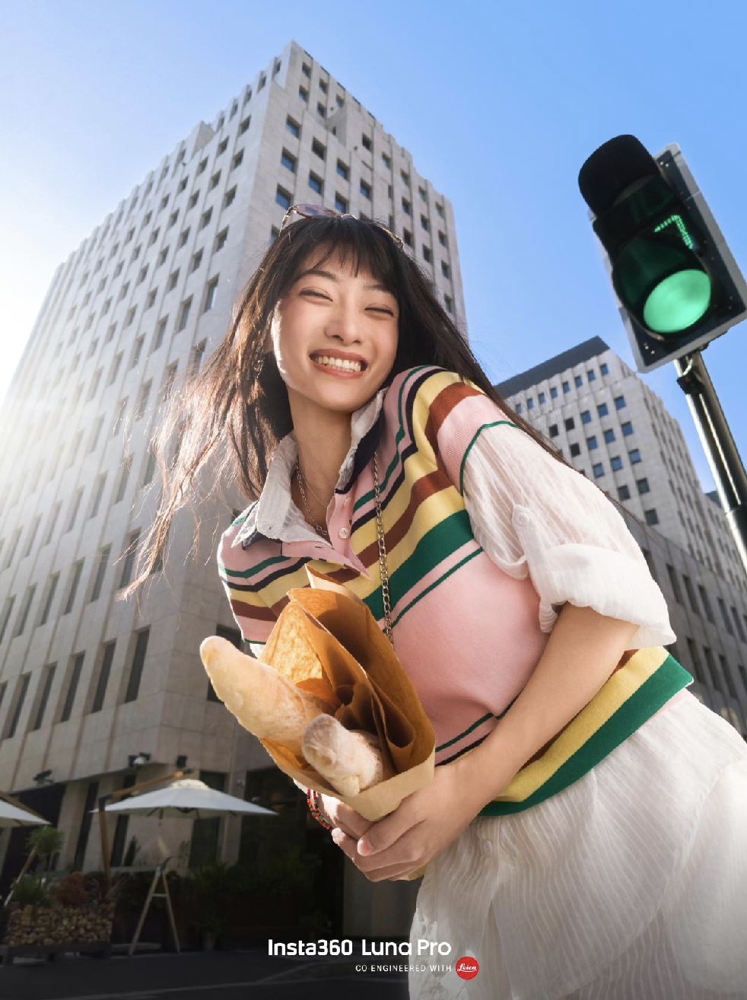
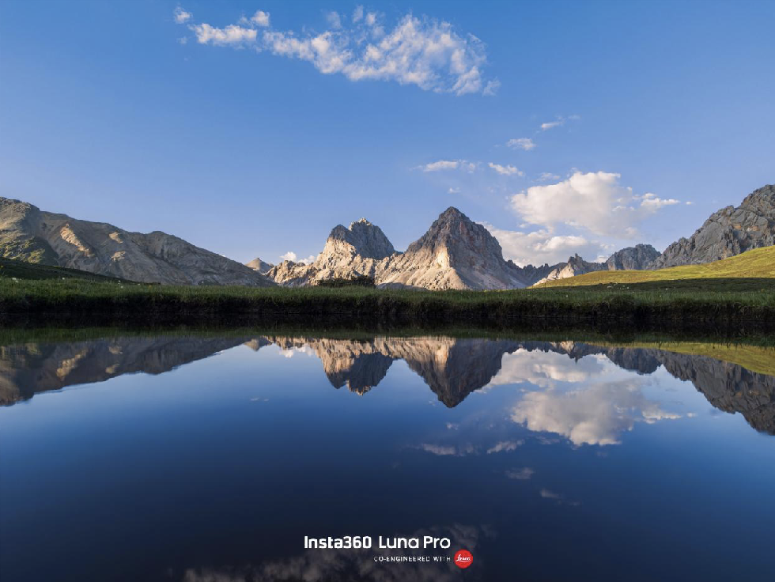

제품 개요
Insta360이 '업계 최초 4K 수직 촬영 짐벌 카메라' Luna Pro를 출시했습니다. 이 제품은 4K 수직 촬영, 4배 초고화질 줌, 1인치 대형 센서, 8K Dolby Vision, 전문가급 10bit I-Log 기능을 특징으로 하며, 가격은 3399위안부터 시작합니다.
디자인 및 편의성
이 제품은 탈착식 영상 전송 리모컨 스크린 디자인을 채택하여 20미터 원거리 고화질 영상 전송 및 카메라의 모든 기능을 제어할 수 있습니다. 리모컨 스크린에는 독립적인 무선 마이크가 내장되어 있어 원거리에서도 선명한 음성 수음이 가능합니다. 또한, 1인칭 헤드 트래킹 모듈을 제공하여 사용자가 전용 헤드 트래킹 액세서리를 착용하면 짐벌과 렌즈가 머리 회전 방향을 정확하게 따라가 현장의 순간을 빠르게 기록할 수 있습니다.
카메라
Insta360은 숏폼 영상 시대의 요구에 맞춰 Luna Pro가 업계 최초로 4K 수직 촬영 기능을 선보인다고 밝혔습니다. 6K 고해상도 오버샘플링을 통해 4K로 변환하여 화면 디테일을 향상시키고, 특정 피사체에서 발생하는 광학 간섭으로 인한 모아레 현상을 6K 오버샘플링으로 현저히 줄여 Sony 1인치 센서의 잠재력을 최대한 발휘합니다. 이를 통해 4K 30fps 9:16 비율의 영상을 바로 출력할 수 있습니다. AI 트래킹 및 3축 손떨림 보정 기능과 결합하여 스마트한 수직 촬영 구도를 구현하며, 촬영 후 9:16 화면을 원클릭으로 공유할 수 있습니다.
공식 발표에 따르면, 이 카메라는 라이카 Summicron F1.8 광학 렌즈를 탑재했으며, 알고리즘 지원을 통해 14스톱의 초고 다이내믹 레인지를 지원합니다. 또한, 새로운 4배 초고화질 줌을 지원하여 2배 4K 무손실 줌을 기반으로 줌 배율이 4배까지 확장될 때 내장 AI 모델이 실시간으로 화면 처리에 개입합니다.
Luna Pro는 3가지 전용 라이카 색상 프리셋(독점 Leica Chrome, Leica Natural, Leica Vivid)과 6가지 영화 같은 필름 필터를 내장하여 촬영 즉시 영화 같은 질감을 얻을 수 있습니다. 모든 필터와 파라미터는 원클릭 QR 코드 스캔을 통해 공유 및 적용할 수 있어 동일한 스타일을 빠르게 복제할 수 있습니다.
또한, Luna Pro는 카메라 내에서 실시간 인물 최적화를 구현합니다. 얼굴 윤곽과 피부 특징을 지능적으로 인식하여 피부 질감과 이목구비 디테일을 유지하면서 정확하게 피부를 보정합니다. 미용 강도, 피부 보정 정도, 밝기 효과는 모두 여러 단계로 사용자 정의 조정이 가능하여 다양한 스타일의 촬영 요구를 충족합니다. 업계 최초로 독립적인 색온도 센서를 탑재하여 환경광 색온도를 실시간으로 감지하고 자동으로 화이트 밸런스를 보정합니다. 따뜻한 실내, 차가운 실외 또는 복잡한 혼합광 환경에서도 피부 표현은 고급스럽고 섬세하며, 빛은 투명하게 표현되어 맑고 고급스러운 인물 사진으로 본연의 아름다움을 재현합니다. 전 세계 다양한 피부색을 가진 사람들을 위해 Luna Pro는 다중 피부색 AI 지능형 적응 알고리즘을 탑재하여 단일 미백 로직으로 인한 피부색 왜곡을 방지합니다.
배터리 및 저장 공간
배터리 및 저장 공간 측면에서 Luna Pro는 1550mAh 대용량 배터리를 탑재하여 최대 4시간 연속 촬영이 가능하며, 하루 종일 촬영 요구를 충족합니다. 고속충전을 지원하여 23분 만에 80%까지 충전됩니다. 47GB의 고속 저장 공간이 내장되어 있습니다.
총평
Insta360 Luna Pro는 4K 수직 촬영, 1인치 대형 센서, 라이카 Summicron 렌즈를 특징으로 하는 업계 최초의 짐벌 카메라입니다. 6K 오버샘플링을 통한 4K 수직 촬영과 AI 트래킹 및 3축 손떨림 보정으로 숏폼 영상 제작에 최적화되어 있습니다. 또한, 라이카 색상 프리셋, 실시간 인물 최적화, 독립 색온도 센서 등의 기능을 통해 고품질의 인물 촬영을 지원하며, 1550mAh 배터리와 고속충전으로 사용 편의성을 높였습니다.
产品发布与核心定位
Insta360 推出了行业首款“4K 竖拍云台相机” Luna Pro，定价为 3399 元起。
- 核心规格：配备 1 英寸传感器、支持 8K 杜比视界及专业级 10bit I-Log。
- 拍摄优势：通过 6K 高分辨率超采样到 4K，旨在降低摩尔纹并提升细节，支持 4K30fps 9:16 直出。
硬件设计与操控功能
- 配备可拆卸图传遥控屏：支持 20 米远距离高清图传、全功能控制及内置的独立无线麦克风。
- 第一人称头追模块：云台与镜头可随佩戴者的头部转动方向精准跟随，便于快速记录现场。
光学镜头与色彩技术
- 搭载 Leica Summicron F1.8 光学镜头，支持 14 档超高动态范围。
- 变焦能力：支持 4 倍超清变焦，在达到 4 倍时由 AI 模型介入处理画面。
- 预设效果：内置 3 款专属 Leica 色彩预设及 6 款电影感胶片滤镜，并支持一键扫码分享。
人像拍摄优化
Luna Pro 提供针对短视频需求的人像增强功能：
- 实时人像优化：智能识别面部轮廓与肤质，提供多档位美颜、磨皮及提亮调节。
- 独立色温传感器：自动校准白平衡，确保不同光影环境下的真实肤感。
- 多肤色 AI 算法：针对全球不同肤色人群进行适配，避免肤色失真。
续航与存储规格
- 电池容量：1550mAh 大容量电池，支持连续拍摄约 4 小时。
- 充电性能：支持高速充电，23 分钟可充至 80% 电量。
- 内部存储：内置 47GB 高速存储空间。
总结
Insta360 推出的 Luna Pro 是首款专为短视频时代设计的 4K 竖拍云台相机，集成了 Leica 光学镜头、强力变焦和专业人像算法。该产品通过高性能硬件与 AI 技术，旨在提供高品质的直出内容及便捷的远程操控体验。
製品概要
Insta360は、業界初となる「4K垂直撮影対応ジンバルカメラ」Luna Proを発表しました。この製品は、4K垂直撮影、4倍超高画質ズーム、1インチ大型センサー、8K Dolby Vision、プロ仕様の10bit I-Log機能を特徴としており、価格は3,399元からとなっています。
デザインと利便性
この製品は取り外し可能な映像伝送リモートスクリーンを採用しており、最大20メートルの距離から高画質な映像を受信し、カメラの全機能を操作することが可能です。リモコン内蔵のワイヤレスマイクにより、離れた場所でもクリアな音声録音が可能です。また、一人称視点（FPV）ヘッドトラッキングモジュールを搭載しており、専用のヘッドトラッキングアクセサリーを装着することで、ユーザーの頭部の動きに合わせてジンバルとレンズが正確に追従し、現場の瞬間を素早く記録できます。
カメラ
Insta360は、ショート動画コンテンツへの対応として、Luna Proが業界初となる4K垂直撮影機能を搭載したことを発表しました。6K高解像度オーバーサンプリングにより4Kへ変換することでディテールを向上させ、特定の被写体で発生する光学的な干渉によるモアレ現象を大幅に低減し、Sony 1インチセンサーの性能を最大限に引き出します。これにより、4K 30fpsの9:16比率の映像を直接出力することが可能です。AIトラッキングと3軸手ブレ補正機能と組み合わせることで、スマートな垂直撮影構図を実現し、撮影後の9:16画面をワンクリックで共有できます。
公式発表によると、このカメラにはLeica Summicron F1.8光学レンズが搭載されており、アルゴリズムのサポートにより14ストップの超高ダイナミックレンジを実現しています。また、新しい4倍超高画質ズームをサポートしており、2倍の4K無損失ズームをベースに、ズーム倍率が4倍まで拡大される際に内蔵AIモデルがリアルタイムで画面処理を行います。
Luna Proは、3種類の専用Leicaカラープリセット（独自のLeica Chrome、Leica Natural、Leica Vivid）と6種類のシネマティックなフィルムフィルターを内蔵しており、撮影直後から映画のような質感を得ることができます。すべてのフィルターとパラメータは、ワンクリックのQRコードスキャンを通じて共有・適用でき、同じスタイルを迅速に再現可能です。
さらに、Luna Proはカメラ内でリアルタイムの人物最適化を実現します。顔の輪郭や肌の特徴をインテリジェントに認識し、肌の質感や目鼻のディテールを維持しながら正確に肌を補正します。美容強度、肌の補正度合い、明るさの効果などはすべて多段階でカスタマイズ可能で、多様な撮影ニーズに対応します。業界初となる独立した色温度センサーを搭載し、環境光の色温度をリアルタイムで検知して自動でホワイトバランスを調整します。暖かい室内や冷たい屋外、あるいは複雑な混合光の環境でも、肌の表現は高級感があり繊細に描写され、光が透明に表現されることで、クリアで洗練された人物写真を再現します。世界中の多様な肌の色に対応するため、Luna ProはマルチスキンカラーAIインテリジェント適応アルゴリズムを搭載しており、単一の美白ロジックによる肌色の歪みを防止します。
バッテリーとストレージ
バッテリーとストレージに関しては、Luna Proは1550mAhの大容量バッテリーを搭載しており、最大4時間の連続撮影が可能で、一日中の撮影ニーズに対応します。急速充電をサポートしており、23分間で80%まで充電可能です。また、47GBの高速ストレージが内蔵されています。
まとめ
Insta360 Luna Proは、1インチ大型センサーとLeica Summicron F1.8レンズを搭載し、業界初となる4K垂直撮影に対応した革新的なジンバルカメラです。高度なAIトラッキングやリアルタイムの人物最適化機能、独立した色温度センサーを備えており、特に高品質なショート動画制作において優れたパフォーマンスを発揮します。さらに、大容量バッテリーと急速充電機能を備えることで、プロフェッショナルからクリエイターまで幅広いユーザーの利便性を高めています。
Product Overview
Insta360 has launched the "Luna Pro," the industry's first gimbal camera featuring 4K vertical shooting. This device is equipped with a 1-inch large sensor, 4x ultra-high-definition zoom, 8K Dolby Vision, and professional 10-bit I-Log capabilities. The price starts from 3,399 RMB.
Design and Convenience
The Luna Pro features a detachable remote control screen design that supports high-definition video transmission over distances of up to 20 meters while allowing users to control all camera functions. The remote screen includes an integrated wireless microphone for clear audio capture from a distance. Additionally, it includes a first-person head-tracking module; when used with the dedicated accessory, the gimbal and lens accurately follow the user's head movements to capture moments instantly.
Camera
To meet the demands of the short-form video era, Insta360 highlights that the Luna Pro is the first in its class to offer 4K vertical shooting. By oversampling from 6K resolution to 4K, it enhances image detail and significantly reduces moiré effects caused by optical interference on specific subjects, maximizing the potential of the Sony 1-inch sensor. This allows for direct output of 9:16 ratio videos at 4K 30fps. Combined with AI tracking and 3-axis stabilization, it provides smart vertical framing and one-click sharing for 9:16 content.
The camera features high-end optics and advanced image processing to ensure professional results:
- Lens: Leica Summicron F1.8 optical lens
- Sensor: Sony 1-inch large sensor
- Dynamic Range: 14 stops (with algorithm support)
- Zoom: 4x ultra-high-definition zoom (based on 2x 4K lossless zoom, with AI intervention at 4x)
- Color Presets: 3 exclusive Leica presets (Leica Chrome, Leica Natural, Leica Vivid)
- Filters: 6 cinematic film filters with QR code sharing for quick application
The Luna Pro also features real-time portrait optimization. It intelligently recognizes facial contours and skin characteristics to provide accurate retouching while maintaining texture and detail. Users can customize beauty intensity, skin correction levels, and brightness effects across multiple stages. Furthermore, it is the first in its class to feature an independent color temperature sensor that detects ambient light in real-time for automatic white balance adjustment. This ensures high-quality skin tones in various lighting environments—such as warm indoor settings, cool outdoor scenes, or complex mixed lighting. To accommodate diverse global skin tones, it utilizes a multi-skin tone AI adaptive algorithm to prevent the discoloration often caused by single whitening logic.
Battery and Storage
The Luna Pro is equipped with a high-capacity 1550mAh battery, supporting up to 4 hours of continuous recording. It supports fast charging, reaching 80% in just 23 minutes. The device also features 47GB of internal storage.
Summary
The Insta360 Luna Pro is a pioneering gimbal camera featuring 4K vertical shooting, a large 1-inch sensor, and a Leica Summicron lens. It is optimized for short-form content through 6K oversampling, AI tracking, and advanced portrait features like real-time skin optimization and an independent color temperature sensor. With its long-lasting battery and fast charging capabilities, it provides high performance and convenience for creators.




